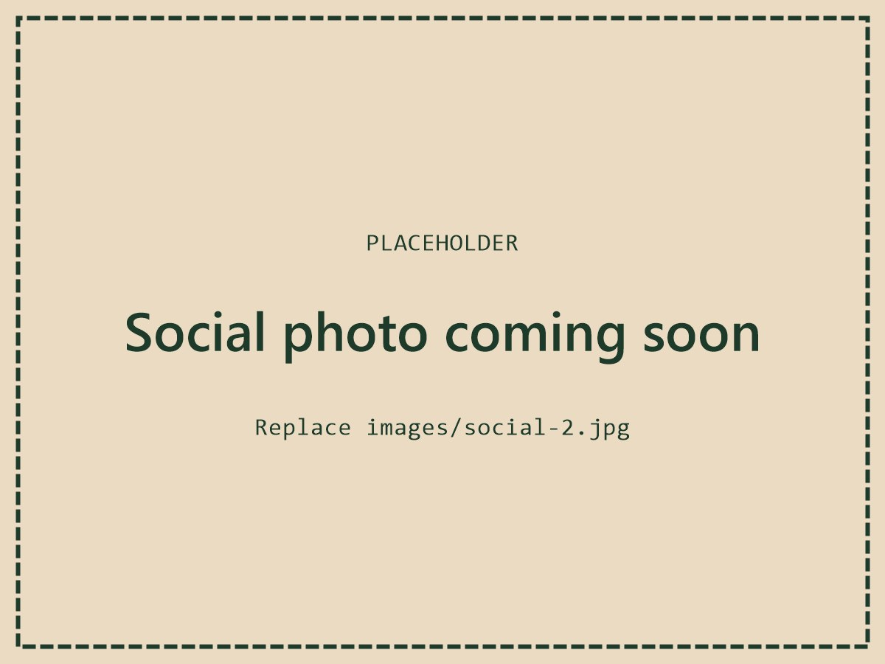

About us
STAG is a student-led charity society at the University of Stirling. We believe everyone deserves dignity, warmth and a bit of kindness, especially when times are hard. Our volunteers put together care packages and hand them out to people experiencing homelessness across Glasgow and Edinburgh, with every drive funded by our student memberships. We also fundraise for different charities, and with 15+ volunteers we've raised over £1,300 for them so far. Whether you can give an evening, a donation, or just help spread the word, there's a place for you at STAG.
Past events
1 of 8
Current members
1 of 3
Socials
1 of 4
